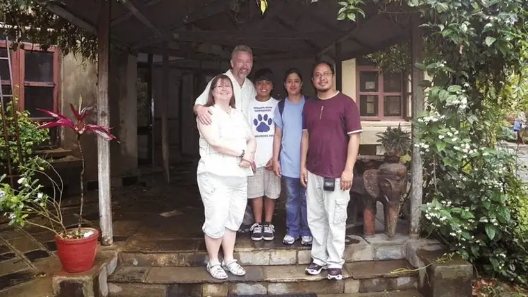

[For the sake of having a repository for my newspaper columns and articles, and allowing a second chance for those who missed them the first time, I reprint them here, with permission. The following ran in The Forum newspaper on Sept. 13, 2014.]
 |
| Trina & Ken Holmberg, left, with their friends, Vani and Shanti Pradhan and son, Nepal. |
{kind=link}
Faith Conversations: Couple sells it all to give to Nepal
By Roxane B. Salonen
FARGO – Eight years ago, Ken and Trina Holmberg were sitting comfortably in their well-furnished home in Edmonton, Canada, dreaming about retirement.
They’d recently relocated from Alberta, where the oil business had impacted their region much like western North Dakota, and were eager to settle into life as middle-aged empty-nesters.
But soon they both began feeling an annoying inner tug, which challenged the picture of a simple, blissful future.
“Throughout our year in that house, we just realized, ‘This isn’t us,’ ” Ken says. “That’s when the decision for Trina to become a pastor started to gel.”
For the next several years, the couple lived in Bethlehem, Penn., where Trina studied at a Moravian seminary. While she took classes, Ken did odd jobs, including serving as a driver for a couple from Nepal who also attended the seminary but lacked access to transportation.
“Ken got to know them, and I did, too, and we talked about how neat it would be to go to Nepal and work for them from time to time,” Trina says.
After graduating in 2009, Trina became pastor at a Moravian church in Unionville, Mich. Then, in October 2010, the couple joined a short-term mission trip to Nepal with their friends, Vani and Shanti Pradhan, and helped lead a family conference.
“Most of (the Nepalese) were born Hindu, so the conference was on what it means to be a Christian in the family context,” Ken says. “That led to conversations about future endeavors.”
Another short-term mission in May 2011 started a discussion about a return for a longer period.
“God just kept pushing these thoughts into us,” Trina says. “I’ve always been drawn to mission work. God put it there, and it just needed some watering to start blossoming.”
Leap of faith
Then this past December, the couple finally decided to put their heart-stirrings into action, agreeing to dedicate a year to the people of Nepal to teach them about Christ.
Several months later, in March, Ken left Michigan to enter into a transition time to prepare; namely to earn money to live for a year, since the work would be volunteer.
Because of connections in the Fargo-Moorhead area – the couple had met the Rev. Eric Renner, pastor of Fargo’s Shepherd of the Prairie Church, while in Pennsylvania – Ken moved here to seek work while Trina finished her commitment in Michigan.
She joined him in August, and the two have been worshipping with local Moravians since then, with plans to leave Oct. 1 for Kathmandu.
There, Trina will be a teacher and administrator at a Christian elementary school, and Ken will help with expansion plans for the school, lend support in setting up a mission house, be part of a worship team and share his cooking skills.
Despite their relatively short time in our area, the two have become endeared to the Shepherd of the Prairie community.
Amy LaFortune-Hewitt, a fellow congregant, says that while Ken provides the enthusiasm for the duo as “the team cheerleader,” Trina offers gentle leadership, providing stability through a “quiet yet strong, gentle faith.”
“Our church has definitely gathered around them and adopted them,” LaFortune-Hewitt says. “We have done what we can to help monetarily, and they will be in prayer at all times.”
The church recently hosted a Nepali dinner to help raise funds, and Renner has denied himself a haircut through the end of the month, asking anyone to donate money for the mission trip as a bribe for him to forgo a cut until their departure.
Being Moravian and missionary go hand in hand, adds LaFortune-Hewitt, who comes from a missionary family herself and says the Holmbergs have been inspiring in their willingness to leave everything for Christ.
“They sold one vehicle, they’re leaving another behind, and whatever possessions they didn’t sell will be left,” she says. “It impresses me so much that in this stage of their life, they’re willing to give up the level of comfort they’ve known here, along with close proximity to friends and family, to do what they feel God is calling them to do.”
No looking back
Not everyone in their lives has been on board, the Holmbergs admit. Some friends have questioned the move, and their three adult children and seven grandchildren have been skeptical at times, too. But by now, they are undaunted.
“There’ve been a lot of prayers, and a few times asking God, ‘Are you crazy? Because I’m feeling kind of crazy right now,’ ” Trina says. “But God has this plan, and he’s put the desire in our hearts so deep that we’re willing to make the sacrifices to follow through.”
Ken says he’s definitely going to miss certain aspects of life here, including bubble baths. “There’s no such thing over there,” he says, giggling.
The goal will be to enter fully into the culture, rather than impose, responding to the real needs as they see them from the inside.
“We’ll undoubtedly add prestige to their school by being white people teaching there,” Trina says, “but our attitude is not doing missions to people but doing missions with them, to enable them to grow their church.”
Life will be different in Kathmandu, a city of nearly 1 million.
“It’s a modern city, but it’s also embedded in the past and has a terrible infrastructure,” Ken says. “You might be driving next to a Mercedes-Benz and high-rise and all of a sudden you’re in a slum by the river.”
“It’s definitely a place of contrast,” Trina adds.
But even as they go, somewhere back in the United States in a modest-sized church in south Fargo, a group will be gathered, praying for their mission and safe return.
“We’re excited to see a year from now how they’ve changed,” LaFortune-Hewitt says. “And there’s no doubt they will be changed.”